ImageMagick v6 Examples --
 Annotating Images
Annotating Images
- Index
 ImageMagick Examples Preface and Index
ImageMagick Examples Preface and Index
 Labeling Images
(techniques for labeling images)
Overlaying Images
(overlaying and merging images on top of each other)
Watermarking
(annotating for copy protection)
Text and Image Positioning Methods
Labeling Images
(techniques for labeling images)
Overlaying Images
(overlaying and merging images on top of each other)
Watermarking
(annotating for copy protection)
Text and Image Positioning Methods
- Mark the image with information about what the image is about.
- Point out or highlight some aspect of the image.
- Add copyright or logos to the image as a form of copy protection.
Annotating Images
The basic problem with labeling an image is doing so the text is readable no matter what the image. The following show many methods, show of which can be expanded to do more complex tasks. In these examples, I am limiting myself to the default font of ImageMagick. You are encouraged to use different fonts and point sizes appropriate to what you want to achieve.Labeling Below (or Above) an Image
Append a Label with centering is now possible, from IM v6.4.7-1,
as Image Appending now follows the gravity
setting, for alignment purposes.
| 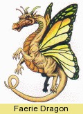 |
By reordering the images you can append the label above the image.
|
![[IM Output]](anno_label2.jpg)
|
Splice and Draw is very simple way of adding extra space to an image to
allow us to draw/annotate the label into the image.
| 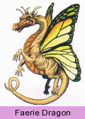 |
The same method can be used to draw a label above the image, just replace the
gravity setting of 'South' with 'North'. Easy!
|
![[IM Output]](anno_splice2.gif)
|
-draw" operator is no
longer recommended for direct drawing onto images, unless part of more complex
drawing functions. See the section on Text to Image
Handling for more details of other text drawing methods and techniques.
Label using Montage The magick montage command in ImageMagick is often
overlooked by users as only useful for creating a magick display of a whole directory
of images. It does provide a very simple way to add labels an image.
| 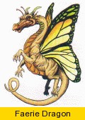 |
Montage can also add a frame and other things to the image for you, so this
form of labeling has a lot of extra possibilities beyond that of simple
labeling of the image.
| 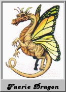 |
Label using Polaroid An alternative to using montage, is to use the
Polaroid Image Transformation, to
generate a rather fancy commented image.
| 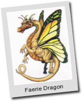 |
Labeling on top of the Image itself...
The problem with writing text directly on a picture is that you can't be sure the text will be readable in the color you have chosen. The image being drawn onto could be black, white or a rainbow of colors.
Outlined Label: The simplest method is to draw the string with a
outline to separate the text from the image. However as the "-stroke" font setting adds
thickness to a font both inward and outward, reducing its effectiveness
(See Stroke and StrokeWidth for more
information.
The better way to draw an font with a background outline is to draw the text
twice.
| 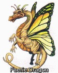 |
Times' or 'Arial' font.
For more details of this technique see Thick
Stroke Compound Font.
Draw Dim Box: The more classical method of making the annotated text
more visible is to 'dim" the image in the area the text will be added, then
draw the text in the opposite color. For example...
|
![[IM Output]](anno_dim_draw.jpg)
|
-gravity" in this example to
place the text, as the darkened rectangle cannot be positioned with gravity
(this may change in the future). Also its size and position can depend on the
image and final text size, which may require some extra math calculations.
Undercolor Box: Instead of trying to draw the background box yourself,
you can get ImageMagick to use an 'undercolor' on the box. See Text Undercolor Box.
The text 'undercolor' (as used in the library API), can be specified on the
command line using the "-undercolor" option.
|
![[IM Output]](anno_undercolor.jpg)
|
Composited Label: The more ideal solution is to prepare a text image
before-hand and then overlay it as an image.
Here we create a simple label on a semi-transparent background, and overlay
it.
|
![[IM Output]](anno_composite.jpg)
|
-gravity" to position it
correctly, without needing any specific knowledge of the image it is being
added to, or of the drawn font being used.
Also you are not limited to using just a simple dimmed box. Instead you can prepare very complex font image, either before-hand, so you can apply it many times, or on the fly on a per image basis. Just about all the Compound Font Effects styles are also available to you, allowing you to make your text additions very exciting and professional looking. Auto-Sized Caption: With the release of IM v6.3.2, the "
caption:" can now automatically adjust the
size of text to best fit a box of a particular size.
But to make proper use of this for an overlay you really need to know how wide
the image being annotated is. Here I gather that info then create and overlay
a caption such that the text is automatically sized to best fit the space
provided, with word wrapping.
|
![[IM Output]](anno_caption.jpg)
|
| 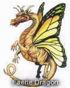 |
-geometry +0-3" offset in the above is used to position the
magick composite overlay closer to the edge, as the soft fuzzy outline of this image
is often larger that is necessary.
All the above examples should of course be adjusted to suit your own requirements. Don't be a sheep and follow what everyone else does. Experiment, and give your own web site or program a distinct flavor from everyone else. And more importantly tell the IM community about it.
FUTURE: select the black or white color based on the images relative
intensity. This uses a number if very advanced techniques.
magick input.jpg -font myfont -pointsize 25 \
\( +clone -resize 1x1 -fx 1-intensity -threshold 50% \
-scale 32x32 -write mpr:color +delete \) -tile mpr:color \
-annotate +10+26 'My Text' output.jpg
Explanation: Copy of image is resized to 1 pixel to find the images
average color. This is then inverted and greyscaled using -fx, then
thresholded to either black or white, (as appropriate).
This single color pixel is now scaled to a larger tiling image, and
saved into a named memory register (mpr:).
The image is then used to set the fill tile, for the annotated text.
Their is however no simple method (at this time) to set the outline -stroke
color of the draw text to its inverse.
Other techniques are to use some text as a 'negate image' mask, or even a color
burn or color dodge compose operation, to distort the image with the text.
Overlaying Images
The "composite" command and the "-composite" image operator in
ImageMagick provides the primary means to place image on top of other images
in various ways. The details of these methods are given in Alpha Compositing Examples Page.
However there are more higher level operators that also make use of alpha
compositing of images. These include Image
Layering, as well as Positioning Images with
Gravity, further down this examples page.
The default compose method of compose is "Over" which just
overlays the overlay image onto the background image, handling transparencies
just as you would expect.
The background image also determines the final size of the result, regardless
of where the overlay is placed (using the "-geometry" option). It doesn't
matter if the overlay is in the middle, halfway off the background image, or
far far away, the output image is the same size as the background image.
The geometry position of the image is also effected by "-gravity", so the positioning of
the overlaid image can be defined relative to any of nine (9) different
locations. See "Positioning Images and Text" below.
On top of "-geometry"
of the compose overlay, individual images can also have a page or canvas
information (set using "-page" and "-repage" options), that can effect the final position of the
images. This image specific information is however not effected by "-gravity".
On with the examples...
Overlaying is probably the most common form of image annotation, and is
very simple to do. Here I overlay a 32x32 icon of a castle in the middle of a
prepared button frame.
magick composite -gravity center castle.gif frame.gif castle_button.gif |
![[IM Output]](../images/castle.gif)
![[IM Output]](../images/frame.gif)
![[IM Output]](castle_button.gif)
magick composite -geometry +31+105 hand_point.gif dragon.gif \
dragon_claw_pointed.jpg
|
![[IM Output]](../images/dragon.gif)
![[IM Output]](dragon_claw_pointed.jpg)
-compose" setting. The default as used above is "-compose
over" which just overlays the image on the background. Most of the
other compose methods provided are not very usable except in very specific
situations, but here are some of them. For more details of this setting and
its effects see Alpha Compositing.
Bumpmap is a tricky compose method and basically darkens the
background image in accordance to the brightness of the overlay image.
Anything that is white in the overlay is handled like it is transparent, while
anything black becomes black on the output image. It is a bit like using the
overlay as an ink stamp and that is a good way of picturing this operation.
As a hint, overlaying with a bumpmap works best with light colored images. So
you may need to prepare the bumpmap image before using.
Here we resize our dragon image before using "-compose bumpmap"
to draw it on a paper scroll image.
magick composite \( dragon.gif -resize 50% \) scroll.gif \
-compose bumpmap -gravity center dragon_scroll.gif
|
![[IM Output]](../images/scroll.gif)
![[IM Output]](dragon_scroll.gif)
![[IM Output]](../images/rings.jpg)
{kind=link}
{kind=link}
{kind=link}
{kind=link}
{kind=link}
{kind=link}
{kind=link}
{kind=link}
The "-tile" option above
only works for compose operations using the "composite"
command. In "convert" you will have to use the "tile:" image generator with a "-size" to specify the extent.
You can of course make your source image overlay larger than the background
image you are overlaying, as the result will be the size of the background
or destination image.
|
bumpmap' compose method, it does not pre-magick the overlaid
image into grey-scale.
mesgs PictureWords |\
magick -pointsize 18 text:- -trim +repage \
-bordercolor white -border 10x5 text.gif
magick composite -compose multiply -geometry +400+3 \
paint_brush.gif text.gif text_multiply.gif
|
![[IM Output]](text.gif)
{kind=link}
text.gif" above is just
to create a typical text only image, the "mesgs" command just
outputs a specific quotation, like "fortune" does but with more
control.
This method works very well in a lot of situations, but generally only if one
(either) image is basically black (or greyscale) on a mostly white background.
If both images contain regions of color, then you may get unusual results.
In other words, this technique is perfect for overlaying line drawings,
diagrams or images of text, on white (or reasonably light colored) images,
such as images of printed or scanned pages.
Water Marking
Watermarking is an important job, as it provides a way of marking an image as belonging to some company or web site. Unfortunately this involves trashing the image in some way, to the detriment of the image itself. The basic goals of watermarking is- The mark should be clearly visible regardless of whether the image is light or dark in color.
- It should be difficult to erase.
- and it shouldn't be too annoying to viewers.
Watermarking with Symbols
One of the simplest, and most annoying forms of watermarking is to just to place a very small but specific image somewhere on the image being watermarked. Here we generated an image (using "logo:") that we
want to watermark, using a small 'eyes' symbol.
magick logo: -resize x180 -gravity center -crop 180x180+0+0 logo.jpg magick composite -geometry +160+13 eyes.gif logo.jpg wmark_symbol.jpg |
{kind=link}
![[IM Output]](wmark_symbol.jpg)
Watermarking with Text
Just drawing text on an image is also a simple way of watermarking, and any of the label on image examples above can be used as a type of wartermark. However to do this properly you should use two different colors to prevent the text from disappearing when drawn on different colored backgrounds. As such some sort of Compound Font Effects should be used.
|
![[IM Output]](wmark_text_drawn.jpg)
|
|
{kind=link}
Now we have a watermark font we can apply it to our image...
|
{kind=link}
'#80808080'").
You may also like to keep this tiling technique in mind with the following
proper watermarking techniques.
|
![[IM Output]](wmark_text_tiled.jpg)
|
Watermarking with Images
| ImageMagick also provides a number of options that are specifically useful for more subtle watermarking, over a larger area. This is usually what is more commonly referred to, when you 'watermark' an image. To the right is a "water dragon" image I will use for these demonstrations. It has some transparency, which I used to check that IM is doing the right thing with respect to transparency, avoiding any horrible 'square' look to the results. |
![[IM Output]](../images/wmark_image.png)
|
Before IM version 6, the options "-watermark" and "-dissolve" were broken with their handling of the alpha
channel (transparency) for the overlaying image, producing some very
strange effects.
|
Watermark compositing was meant to watermark images, and while it
works, it tends only to work with pure white and black overlay images,
producing ugly edge artifacts.
| ||
{kind=link}
Dissolve was found by me and others to work better.
|
![[IM Output]](wmark_dissolve.jpg)
| |
Tiled: You can also tile the watermark across the background image
instead of just adding it in one location. Just replace your gravity position
with "-tile" instead. Of course in that case you may want to
make the watermark even less intrusive.
|
![[IM Output]](wmark_tiled.jpg)
| |
Greyed Bumpmap: To use bumpmap properly as a watermark the image needs
some preparation to make both white and black a lighter grey color range,
using a Grey-Scale Adjustment
technique. If this is not done the result would be very very bold.
| ||
{kind=link}
{kind=link}
Tiled Greyed Dissolve: This is exactly as above but tiled over the
image with an even lower dissolve value.
|
![[IM Output]](wmark_dissolve_tile.jpg)
|
The "composite" command does not know how to handle multi-image
files such as animations. However other methods do allow you to do this.
See Modifying Animations, Annotating
for examples of annotating and overlaying multi-image files.
|
Positioning Images and Text with Gravity
The 'Gravity' of the Situation
As you can see above, being able to position images and text in a larger image can be just as important as anything else. Naturally the "-gravity" setting is one of the
most important aspects of this.
- On the ImageMagick Mailing list, Tim Hunter declared
- “ Gravity will make you crazy until you get the hang of it. ”
- This is a sentiment to which I agree wholeheartedly.
- Any operation that involves a 'geometry' like setting, like "
-crop" and "-geometry" positioning of images for Alpha Composition, including Multi-image Layered Composition. - It is also used, as means of specifying the text justification by the
various text to image generators such as "
label:" and the text justification by the various text to image generators such as "caption:". - The "
-annotate" text drawing operator also uses it for text positioning as well as justification. - And finally it is used by the "
-draw" method for its 'text' and "image' methods, and ONLY those methods.
-gravity" is
NOT used for
- Any image list or layer operators, such as "
-mosaic", "-flatten" and most "-layers" methods, and especially not in GIF animations. All of these operations uses image offsets on a larger virtual canvas (set using the "-page", "-repage" meta-data settings) to position images. Such offsets are always relative to the top-left corner of the images virtual canvas. No understanding of "-gravity" is used in this methodology. - Any other "
-draw" method does not use "-gravity" for positioning. It is also unlikely to do so as "-gravity" is not defined under the SVG draft which IM follows for these low level functions.
-geometry" uses to position
overlay text and images relative to the images edges, sides and center,
without the user needing to know the actual size of the image. This is its
primary function.
Secondly it defines horizontal and vertical justification of the overlaid
object (text or image) relative to that defined point of gravity. For
example, with 'East' gravity the text or image will be placed to
the right (right justification) of the defined point.
Justification should technically be a separate setting to "-gravity", though closely
related, however IM currently combines both into a single setting.
There is a push to separate the two aspects such if a
"justification" setting is undefined it falls back to using the
current "-gravity"
setting. If you find you need this, request it from Cristy (via the mail
list). If enough users ask for it I am sure it will eventually be implemented.
Image Positioning using Gravity
Here is an example of using gravity to position images on a background.magick composite label:Default rings.jpg gravity_default.jpg magick composite label:Center -gravity center rings.jpg gravity_center.jpg magick composite label:South -gravity south rings.jpg gravity_south.jpg magick composite label:East -gravity east rings.jpg gravity_east.jpg magick composite label:NorthEast -gravity northeast rings.jpg gravity_northeast.jpg |
![[IM Output]](gravity_default.jpg)
![[IM Output]](gravity_center.jpg) 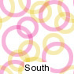
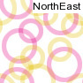
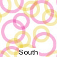
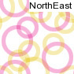
{kind=link}
{kind=link}
{kind=link}
-gravity" setting.
That is a gravity of "South" will center the image at the bottom
of the larger image, but above that gravity point. This will become more
important later with text rotation.
The other thing to remember is that the position specified by any "-geometry" setting is relative
to the position gravity places the image. Not only that the direction of the
position is also modified so that a position direction is inward.
For example the "-gravity South -geometry +10+10" will move the
label image further into the background. That is the Y direction of the
geometry position has been reversed, while the X direction was left alone.
magick composite label:Default -geometry +10+10 \
rings.jpg gravity_default_pos.jpg
magick composite label:South -geometry +10+10 -gravity south \
rings.jpg gravity_south_pos.jpg
magick composite label:NorthEast -geometry +10+10 -gravity northeast \
rings.jpg gravity_northeast_pos.jpg
|
![[IM Output]](gravity_default_pos.jpg)
![[IM Output]](gravity_northeast_pos.jpg)
![[IM Output]](gravity_south_pos.jpg)
-gravity" with "-draw image", to multiple images with
a single command.
|
![[IM Output]](gravity_image.jpg)
|
-composite" to overlay images onto the background as well...
|
![[IM Output]](gravity_image2.jpg)
|
-compose" settings used above see Alpha
Composition. For other methods of overlaying combining and overlaying
multiple images into one single image, see The IM Examples section Layers of Multiple Images.
Text Positioning with Gravity
That is all well and good for images but what about drawing text directly on images. Well the same basic effects as for images apply. As mentioned above gravity will also effect the positioning of text using either the "-draw"
'text' method, or the better "-annotate" text drawing
operator.
|
![[IM Output]](gravity_text.jpg)
|
-gravity", the string will be
drawn relative to the 'baseline' of the font.
For example, lets actually do this...
| 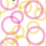 |
{kind=link}
-gravity" to 'NorthWest' the text will be positioned
as if it was an image. That is relative to its
bounding or undercolor box as defined by the font.
For example...
|
![[IM Output]](gravity_text_nw.jpg)
|
-gravity none"
or "+gravity" to reset
it back to the default 'no gravity' setting.
Lets apply a text offset and draw both the default 'None' and
'NorthWest' arguments for "-gravity", just so you can see
how closely the two forms are related.
| 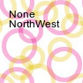 |
{kind=link}
g',
and 'p'. That this the two string are not properly separated by
'pointsize' units, but only by the fonts baseline height.
The best idea is not to mix the two modes in your own image
processing. Either use gravity, or don't. The choice is yours.
Text on Left Edge using Gravity
As a final example here is the way to actually annotate centered along the left edge of an image. The problem here is that when you rotate text, it rotates around the text 'handle'. Unfortunatally this handle is set by gravity BEFORE the text is rotated, and as such does not work very well, unless you use restrict yourself to 'centered text'.
For example here is a typical 'first try' to positioning text so that it is
positioned along the center of the left edge of the image. Of course it fails
rather unexpectally!
| 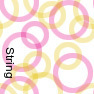 |
{kind=link}
-gravity" setting is also
directly used to set the text 'justification' (which sets the 'handle' used to
position the text).
There is some animated demos of gravity effects on rotated text written in
PerlMagick API (Download "im_annotation.pl". I also created a shell script version of
the same program, "im_annotation", and "im_annotation_2".
A trick to making this work to rotate the whole image first then use center
south! It is a non-sensical solution, but it works.
|
![[IM Output]](gravity_text_left.jpg)
|
Text Positioning using Draw
While in the above I used a 'text offset' to position the text relative to the "-gravity" point, it is
not the only way to do so. The other method is to use a "-draw
translate" option to position the text.
This has the advantage in that you can arrange to position text without
gravity effects, while still using gravity to 'justify' the positioning
'handle' within the text.
In these examples I added some extra construction lines (which are also not
gravity effected) to show how the position is applied from the center point of
the image.
Text with an offset...
|
![[IM Output]](text_offset.jpg)
|
| 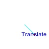 |
{kind=link}
-draw
text" requires you to give an offset that was part of its arguments, it
is more commonly used to position the drawn text from the command line.
However while both of these methods produce the same result, they will produce
completely different results when text rotation is also applied. Basically
due to the order in which the actions are being applied.
Draw Rotated Text
There are two separate ways of positioning drawn text: use a 'text offset', or 'translate' the text to the final position. The effects of these two positioning methods produce very different results when rotation is also applied. The reason for this is complex, but essentially involves how IM does Drawing Surface Warps. Having said that lets look at what happens if you rotate some text using the two different positions. Just an offset, without rotation...
| 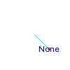 |
{kind=link}
|
![[IM Output]](rotate_offset.jpg)
|
|
![[IM Output]](rotate_translate.jpg)
|
-annotate"
operator was designed specifically to make positioning rotated text easier, by
specifically asking IM to draw the text with rotation, instead of 'doing
surface warping'.
Annotate with rotate and offset...
|
![[IM Output]](rotate_annotate.jpg)
|
-gravity" setting not only
refers to the position on the background image, but also the position in the
overlay image that is to be drawn.
IMv7 will be adding 'Text Justification', which refers to the overlay
position, as a separate (but related) setting to gravity (background position).
Text Positioning using Distort
Using SRT Distortion with Layering Images, is particularly good method for placing images (or text in images). Basically it allows you complete low level control over both the point at which the image is placed, as well as how the image is to be arranged at relative to that point. To start with here we create a 'text image' with a transparent background and simply 'layer' the image onto the background image.
| 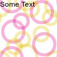 |
{kind=link}
| 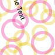 |
{kind=link}
+60+60' in the background image
| 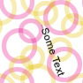 |
{kind=link}
!'
flag. The 'handle' for this is by the nature of layer images, the top left
corner.
The SRT Distortion Operator will not only
translate the image using the handle specified, but can use sub-pixel
(floating point) positions for both of those handles. That is it can distort
the text by sub-pixel increments to any location, without the integer
restrictions most other operations have.
The final example is placing the 90 degree rotated text on the left edge.
The handle of the text to rotate around and position will this time be at the
be the center bottom of the text, before it was rotated. That is a calculated
position of '%[fx:w/2],%h'.
Position on the background image must also now be calculated to be the center
left edge, ('0,%[fx:h/2]'). The problem is the SRT Distortion Operator does not have access to
the background image when it is distorting the text image.
The solution is to do this position calculation when the background image
available, and save it into some 'personal setting' which can then be added to
the distort arguments. This technique is looked more closely in Extract Information from Other Images.
So here is the result. First calculate the position on the background image.
Then distort the text image so its 'handle' is also moved to that
pre-calculated position.
|
![[IM Output]](layer_on_left.jpg)
|
my:' string can be anything that does not clash with
existing prefixes. That is I use it to hold MY settings, separate to any other
settings ImageMagick may use for coders or specific options. Prefixing
'my:' is a good choice for this.
Percent escapes are handled purely as string substitutions, and in fact we
could generate the whole Distort option as a string. The only problem is you
can not do math on your 'my:' settings, after they have been set.
So any mathematics must be done before hand. This is something that will be
looked at for IMv7, so that FX expresions use % escape variables.